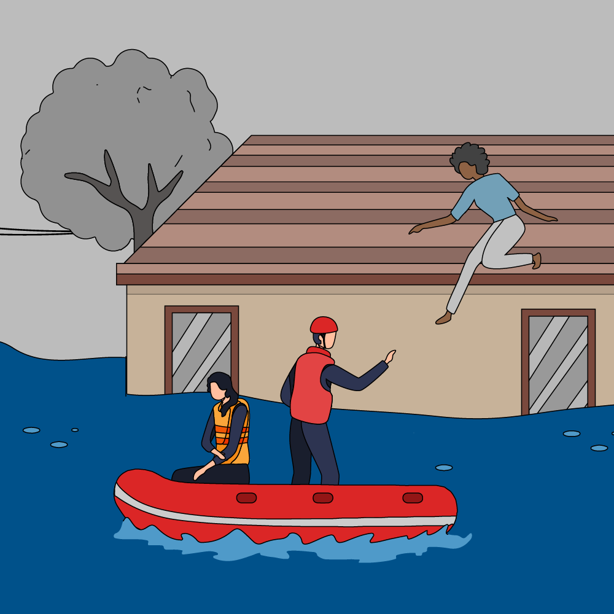

재난이 발행한 이후에는 소문과 사기가 무성하기 마련입니다. 다음과 같이 4가지 간단한 조치를 취하여 소문의 확산을 막는 데 일조해 주십시오.
- 신뢰할 수 있는 정보 출처 모색
- 신뢰할 수 있는 출처의 정보 공유
- 검증되지 않은 출처의 정보를 다른 사람들이 공유하지 않도록 방지
Graphic

소문
일반적인 재난 관련 정보와 자주 묻는 질문, 재난 발생 후 사기를 신고하는 방법에 대해 자세히 알아보세요.
드롭다운 메뉴를 사용하여 질문 유형 별로 필터링하거나 키워드